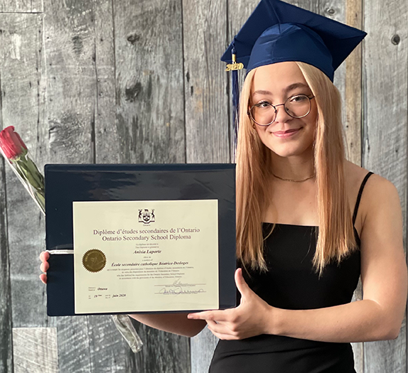

My names Anisia Laporte, born May 1st and grew up here in Ottawa Ontario. I love being creative and have always loved art from a young age. Growing up I used to always take every art class in highschool and that became my favourite subject. Throughout my last few years of highschool I found a new interest in technology, which I then went on to continue learning and building computers.
I slowly started merging both my interest and started learning about digital art and media design. I began my studies at Algonquin by taking the Computer Engeneering - Computer Science program. Started learning beginer level Java code, Linux, math etc. After taking that for a few months I realised how much I missed taking art. I decided to finish the semester and later on switch over to the Interactive Media Design program to learn about both the things I love, computers and art.
The only reason for time is so that everything doesn't happen at once.-Albert Einstein